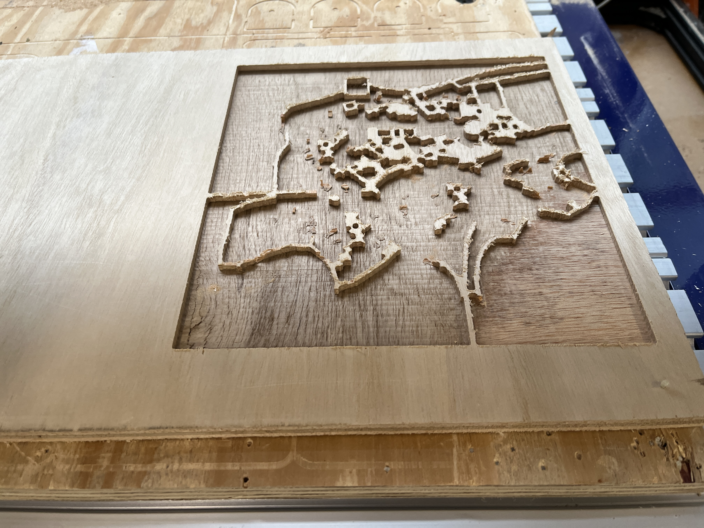
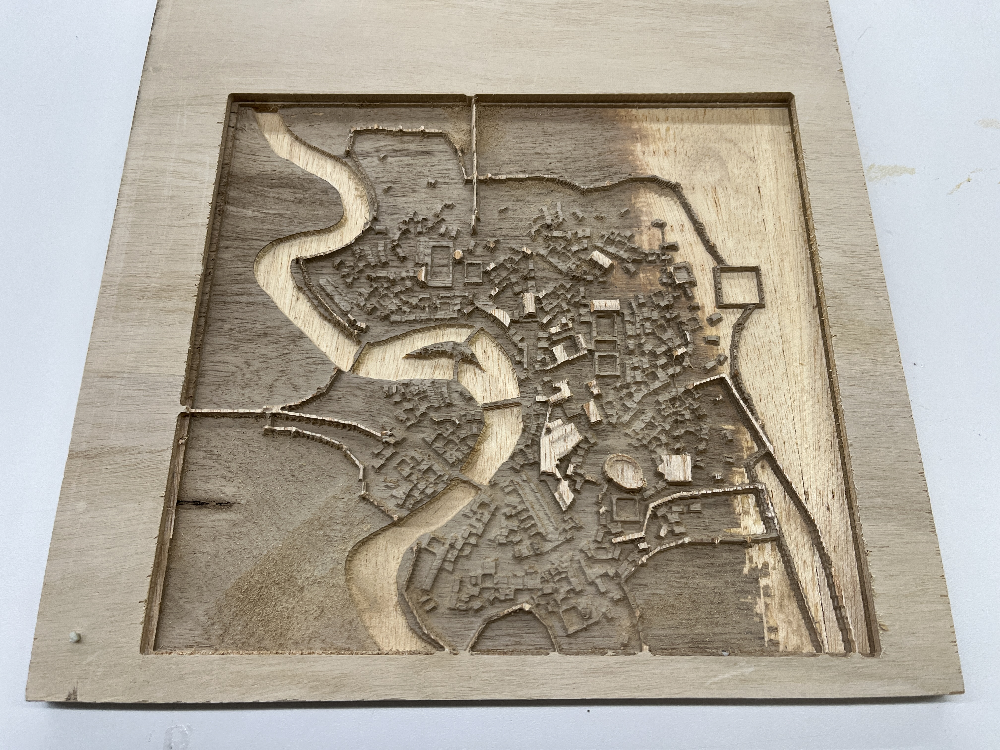
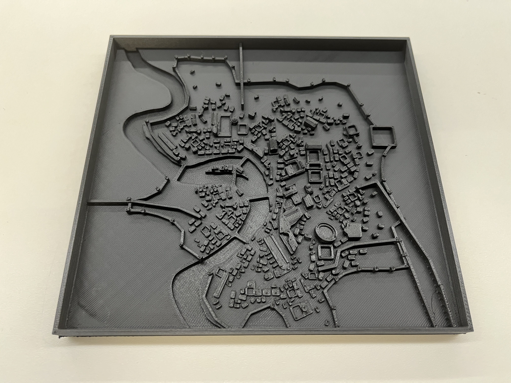
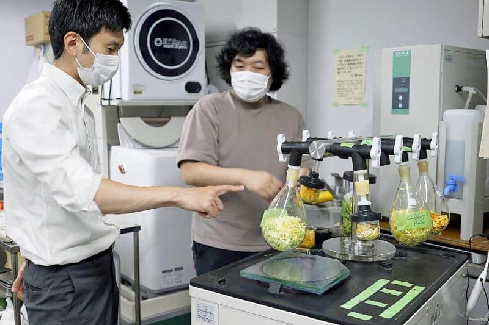
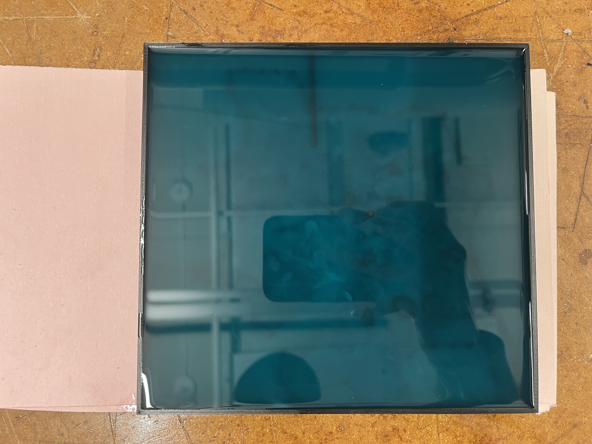
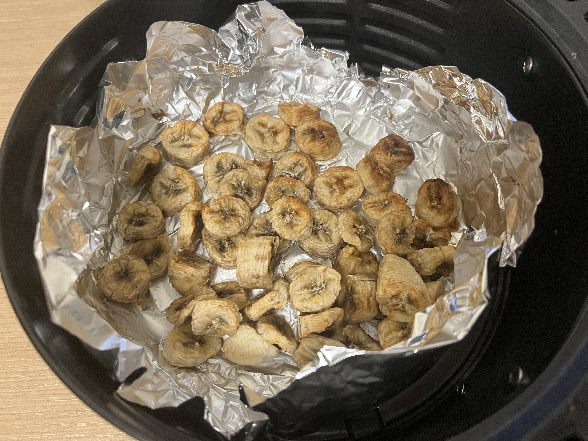
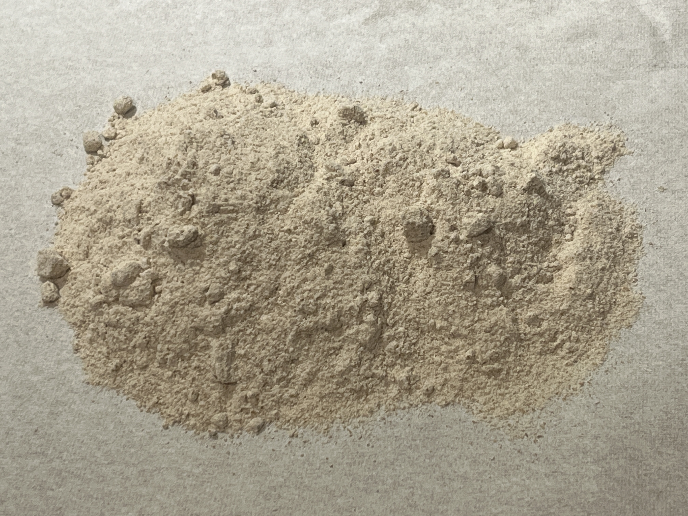
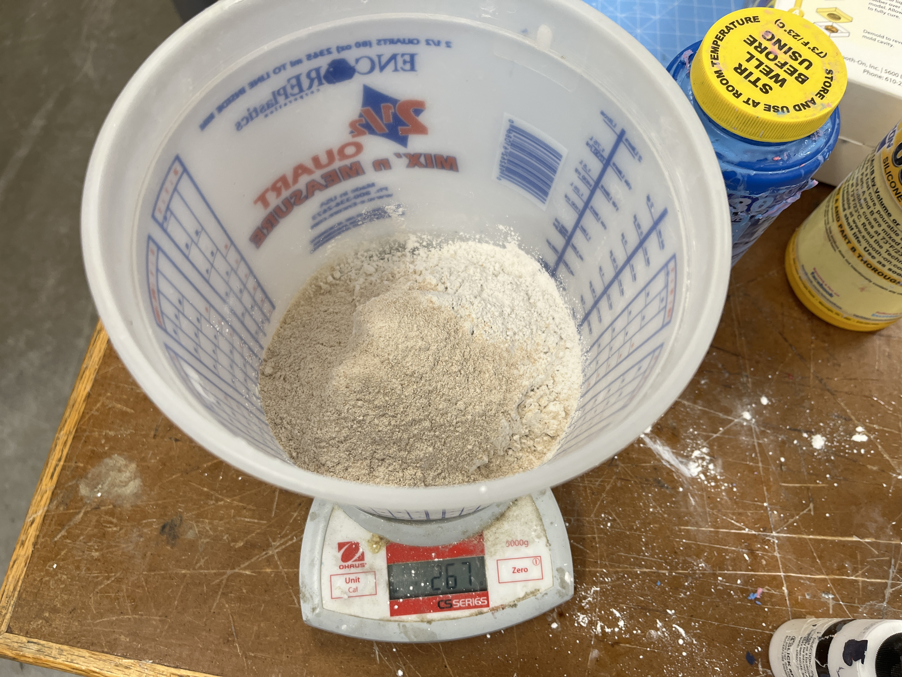
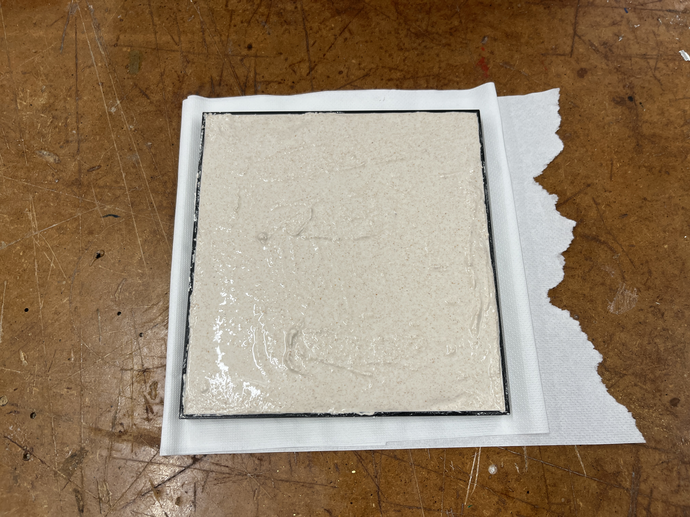
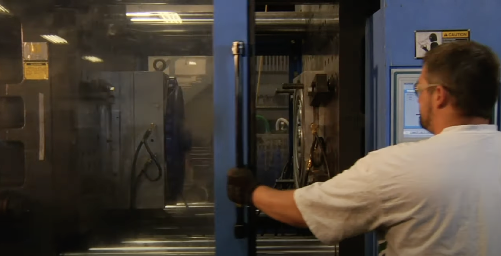

WK8: CNC Milling
CNC
The aim was to use the machine to print a simple model of Rome, but the result was disappointed.
I think it is mainly because the size of either the model or the machine is too small to represent a city model.
Also, the wood material was not very good as well.
The black-ish color in the central layer of the wood caused the ugly color of the final model.
Even though I used the endmill 1/32 rather than 1/8 for the final cut, the final model was still very rough.
Generally disappointed by that machine, because I think a cnc machine should be either large to deal with huge project or be small to deal with delicate object.
This medium-sized machine is a little awkward.

The Rough Cut using 1/8 endmill.

The Final Cut using 1/32 endmill.

3d printing had better result than cnc printing.
Bio-material from Food

Research done by others
The post-process of the previous model was to use the banana as an example to test its potential.
The material of the product was from the mixture of cement and bananas.
Two different mixing ratios were tested (75% cement 25% banana, and 50% cement 50% banana), although it seemed that the outcomes were pretty much the same.
According to the research, different mixing ratios will result in different material properties, especially for hardness, but it would be hard for me to test their prpterties.

Made silicon model out of the 3d printing model

Made silicon model out of the 3d printing model
Pre-process the food before mixing them with cement.

Bake and dyhydrate

Grind into powder

Mix the banana powder with cement

Use the silicon mold to hold banana-cement mixture

Use the silicon mold to hold banana-cement mixture
The final products were not very satisfying.
Based on their research, the material should be three times harder than cement, but my results were a little fragile.
Probably it was because the dehydration process. They used a very professional machine to control the water ratio.
Final products with two ratios

The dehydrator machine